Exercise as Medicine in CKDEhersisyo bilang Gamot sa CKDEhersisyo isip Tambal sa CKD Ehersisyo bilang Gamut king CKD
CKD patients who exercise regularly have slower progression of kidney disease, lower cardiovascular mortality, better blood pressure control, and improved quality of life — independent of medications. Exercise is not something to avoid in CKD. Done safely, it is one of the most powerful interventions available.Ang mga pasyente ng CKD na regular na nag-eehersisyo ay may mas mabagal na pag-unlad ng sakit sa bato, mas mababang cardiovascular mortality, mas magandang kontrol sa presyon ng dugo, at pinahusay na kalidad ng buhay — anuman ang mga gamot. Ang ehersisyo ay hindi dapat iwasan sa CKD. Kung gagawin nang ligtas, ito ay isa sa pinakamabisang interbensyon na available.Ang mga pasyente sa CKD nga regular nga nag-eehersisyo adunay mas hinay nga pag-uswag sa sakit sa kidney, mas ubos nga cardiovascular mortality, mas maayo nga kontrol sa presyon sa dugo, ug pinahiusab nga kalidad sa kinabuhi — bisan unsa ang mga tambal. Ang ehersisyo dili ilikayan sa CKD. Kung buhaton nga luwas, kini usa sa labing gamhanan nga interbensyon nga magamit. Ing deng pasyente ning CKD a regular a nag-eehersisyo ya atin mas mabagal a pag-unlad ning sakit king batu, mas mababang cardiovascular mortality, mas magandang kontrol king presyon ning daya, at pinahusay a kalidad ning biye — anuman ing deng gamut. Ing ehersisyo ya ali dapat iwasan king CKD. Nung gagawin nang ligtas, ini ya metung king pinakamabisang interbensyon a available.
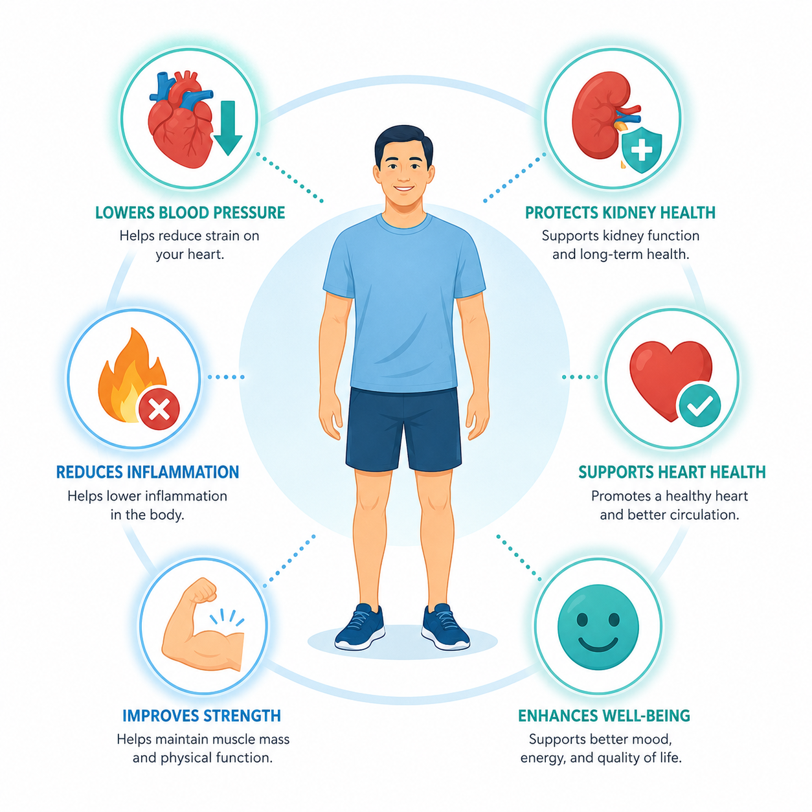
CKD-specific muscle wastingPagkawala ng kalamnan na katangian ng CKDPagkawala sa kaunoran nga katangian sa CKD Pagkaala ning kalamnan a katangian ning CKD
Uremic toxins, metabolic acidosis, and inactivity cause accelerated muscle breakdown (sarcopenia) in CKD. Resistance exercise is the only proven intervention to reverse it — and muscle mass is a strong independent predictor of survival in dialysis patients.Ang mga uremic toxin, metabolic acidosis, at kawalan ng galaw ay nagdudulot ng mabilis na pagkasira ng kalamnan (sarcopenia) sa CKD. Ang resistance exercise ang tanging napatunayang interbensyon upang baligtarin ito — at ang masa ng kalamnan ay isang malakas na independyenteng predictor ng kaligtasan sa mga pasyente ng dialysis.Ang mga uremic toxin, metabolic acidosis, ug kawala sa galaw nagdala og paspas nga pagkaguba sa kaunoran (sarcopenia) sa CKD. Ang resistance exercise ang bugtong napatunayang interbensyon aron baligtaron kini — ug ang masa sa kaunoran usa ka kusganon nga independyenteng predictor sa pagkabuhi sa mga pasyente sa dialysis. Ing deng uremic toxin, metabolic acidosis, at kawalan ning galaw ya nagdudulot ning mabilis a pagkasira ning kalamnan (sarcopenia) king CKD. Ing resistance exercise ing tanging napatunayang interbensyon upang baligtarin ini — at ing masa ning kalamnan ya metung a malakas a independyenteng predictor ning kaligtasan king deng pasyente ning dialysis.
Exercise and dialysis adequacyEhersisyo at kasapatan ng dialysisEhersisyo ug kasapatan sa dialysis Ehersisyo at kasapatan ning dialysis
Exercise during hemodialysis sessions (intradialytic exercise) improves toxin clearance by increasing blood flow to muscles — improving effective Kt/V by 5–10% without changing the dialysis prescription. Even gentle pedaling during HD is beneficial.Ang ehersisyo sa panahon ng mga sesyon ng hemodialysis (intradialytic exercise) ay nagpapabuti ng pagtanggal ng toxin sa pamamagitan ng pagpapataas ng daloy ng dugo sa mga kalamnan — nagpapabuti ng epektibong Kt/V ng 5–10% nang hindi binabago ang reseta ng dialysis. Kahit ang malumanay na pedaling sa panahon ng HD ay kapaki-pakinabang.Ang ehersisyo sa panahon sa mga sesyon sa hemodialysis (intradialytic exercise) nagpabuti sa pagtangtang sa toxin pinaagi sa pagdugang sa daloy sa dugo ngadto sa mga kaunoran — nagpabuti sa epektibong Kt/V og 5–10% nga wala gibag-o ang reseta sa dialysis. Bisan ang malumo nga pedaling sa panahon sa HD mapuslanon. Ing ehersisyo king panahon ning deng sesyon ning hemodialysis (intradialytic exercise) ya nagpapabuti ning pagtanggal ning toxin king pamamagitan ning pagpapataas ning daloy ning daya king deng kalamnan — nagpapabuti ning epektibong Kt/V ning 5–10% nang ali binabago ing reseta ning dialysis. Kahit ing malumanay a pedaling king panahon ning HD ya kapaki-pakinabang.
The inactivity spiralAng spiral ng kawalan ng galawAng spiral sa kawala sa galaw Ing spiral ning kawalan ning galaw
Fatigue → inactivity → muscle loss → worsening fatigue → more inactivity. This self-reinforcing cycle is extremely common in CKD and progresses rapidly. Gentle daily movement — even 10 minutes — breaks the cycle and rebuilds functional capacity incrementally.Pagod → kawalan ng galaw → pagkawala ng kalamnan → lumalalang pagod → karagdagang kawalan ng galaw. Ang cycle na ito na nagpapatibay sa sarili ay napaka-karaniwan sa CKD at mabilis na sumusulong. Ang malumanay na pang-araw-araw na kilusan — kahit 10 minuto — ay sumisira sa cycle at muling nagtatayo ng functional capacity nang paunti-unti.Pagod → kawala sa galaw → pagkawala sa kaunoran → pagkagrabe sa pagod → dugang kawala sa galaw. Kining cycle nga nagpalig-on sa kaugalingon kaayo kasagaran sa CKD ug dali nga mosulong. Ang malumo nga adlaw-adlaw nga paglihok — bisan 10 minuto — nakaputol sa cycle ug nagbalik sa functional capacity sa gamay-gamay. Pagod → kawalan ning galaw → pagkaala ning kalamnan → lumalalang pagod → karagdagang kawalan ning galaw. Ing cycle a ini a nagpapatibay king sarili ya napaka-karaniwan king CKD at mabilis a sumusulong. Ing malumanay a aldo-aldong a kilusan — kahit 10 minuto — ya sumisira king cycle at muling nagtatayo ning functional capacity nang paunti-unti.
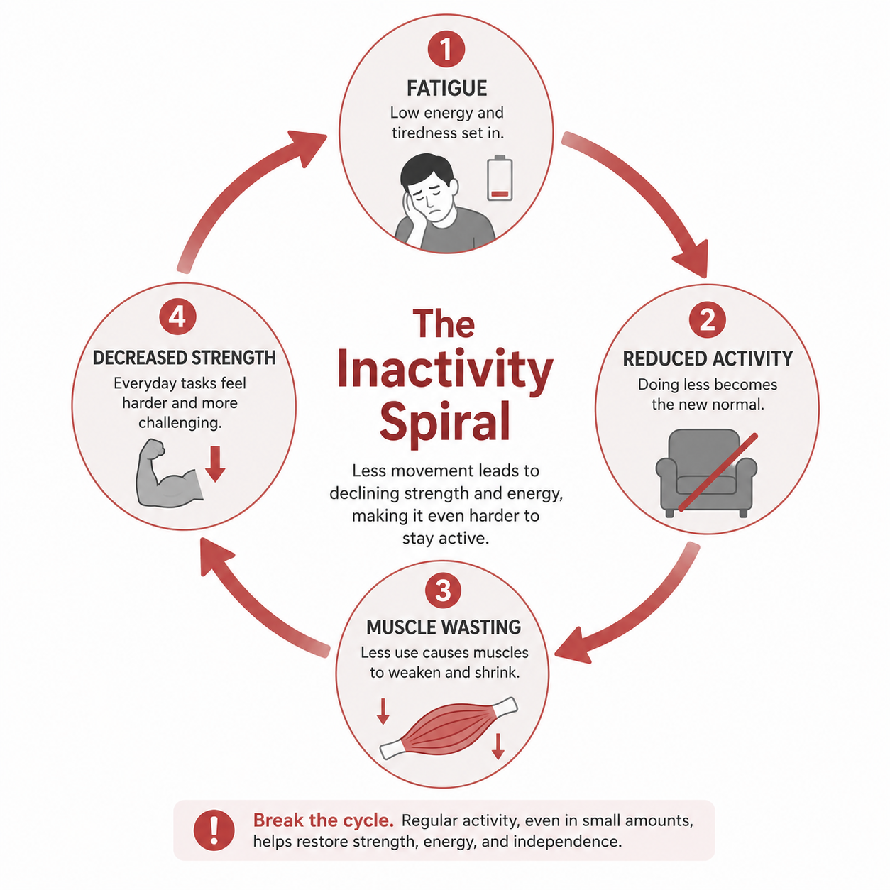
Safety Rules — Non-NegotiableMga Patakaran sa Kaligtasan — Hindi MapagkakasunduanMga Patakaran sa Kaluwasan — Dili Mapagkasabutan Deng Patakaran king Kaligtasan — Ali Mapagkakasunduan
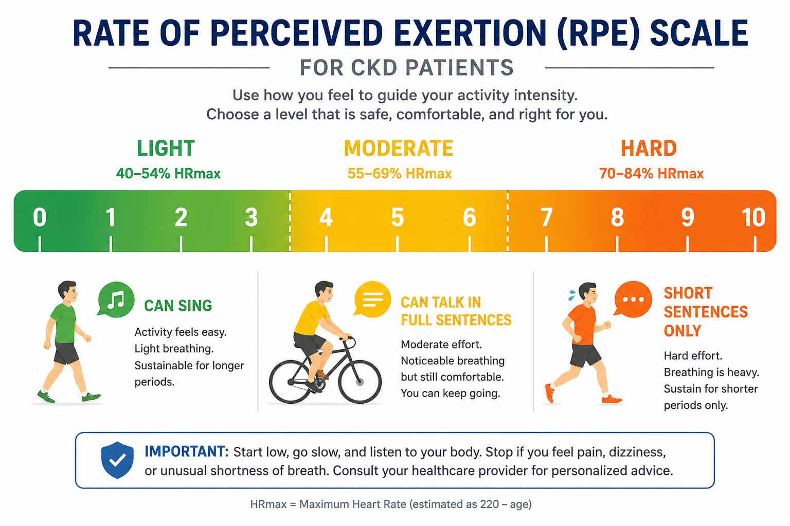
STOP exercising immediately and rest if you experience any of the following:ITIGIL agad ang ehersisyo at magpahinga kung naranasan ninyo ang alinman sa sumusunod:HUNONG dayon sa ehersisyo ug pahulay kung masinati ninyo ang bisan usa sa mosunod: ITIGIL agad ing ehersisyo at magpahinga nung naranasan ninyo ing alinman king sumusunod:
- Chest pain, tightness, or pressure — even mildSakit sa dibdib, pagiging masikip, o presyon — kahit banayadSakit sa dughan, pagkapisok, o presyon — bisan malumo Sakit king dibdib, pagiging masikip, o presyon — kahit banayad
- Shortness of breath that does not improve within 2 minutes of stoppingHirap sa paghinga na hindi nagpapabuti sa loob ng 2 minuto pagkatapos humintoKakulangon sa ginhawa nga dili moayo sulod sa 2 minuto human mohunong Hirap king paghinga a ali nagpapabuti king loob ning 2 minuto kapabanuan huminto
- Dizziness, lightheadedness, or feeling faintPagkahilo, pagkaligaw-ligaw ng ulo, o pakiramdam na mahahimatayPagkalipong, pagkagaan sa ulo, o pagbati nga hapit mawad-an sa panimuot Pagkahilo, pagkaligaw-ligaw ning ulo, o pakiramdam a mahahimatay
- Palpitations or irregular heartbeat you can feelPalpitasyon o irregular na tibok ng puso na nararamdaman ninyoPalpitasyon o irregular nga tibok sa kasingkasing nga masinati ninyo Palpitasyon o irregular a tibok ning pusu a nararamdaman ninyo
- Sudden severe muscle cramps — especially in dialysis patients (electrolyte shift)Biglaang matinding cramp ng kalamnan — lalo na sa mga pasyente ng dialysis (electrolyte shift)Kalit nga grabe nga cramp sa kaunoran — labi na sa mga pasyente sa dialysis (electrolyte shift) Biglaang matinding cramp ning kalamnan — lalo a king deng pasyente ning dialysis (electrolyte shift)
- Access site pain, swelling, or bleeding in dialysis patientsSakit, pamamaga, o pagdurugo sa access site sa mga pasyente ng dialysisSakit, pamamag-o, o pagdugo sa access site sa mga pasyente sa dialysis Sakit, pamamaga, o pagdurugo king access site king deng pasyente ning dialysis
- Sudden severe headacheBiglaang matinding sakit ng uloKalit nga grabe nga sakit sa ulo Biglaang matinding sakit ning ulo
- Any symptom that feels "not right" — trust your bodyAnumang sintomas na pakiramdam ay "hindi tama" — magtiwala sa inyong katawanBisan unsang sintomas nga gibati nga "dili husto" — pagsalig sa inyong lawas Anumang sintomas a pakiramdam ya "ali tama" — magtiwala king inyu bangkî
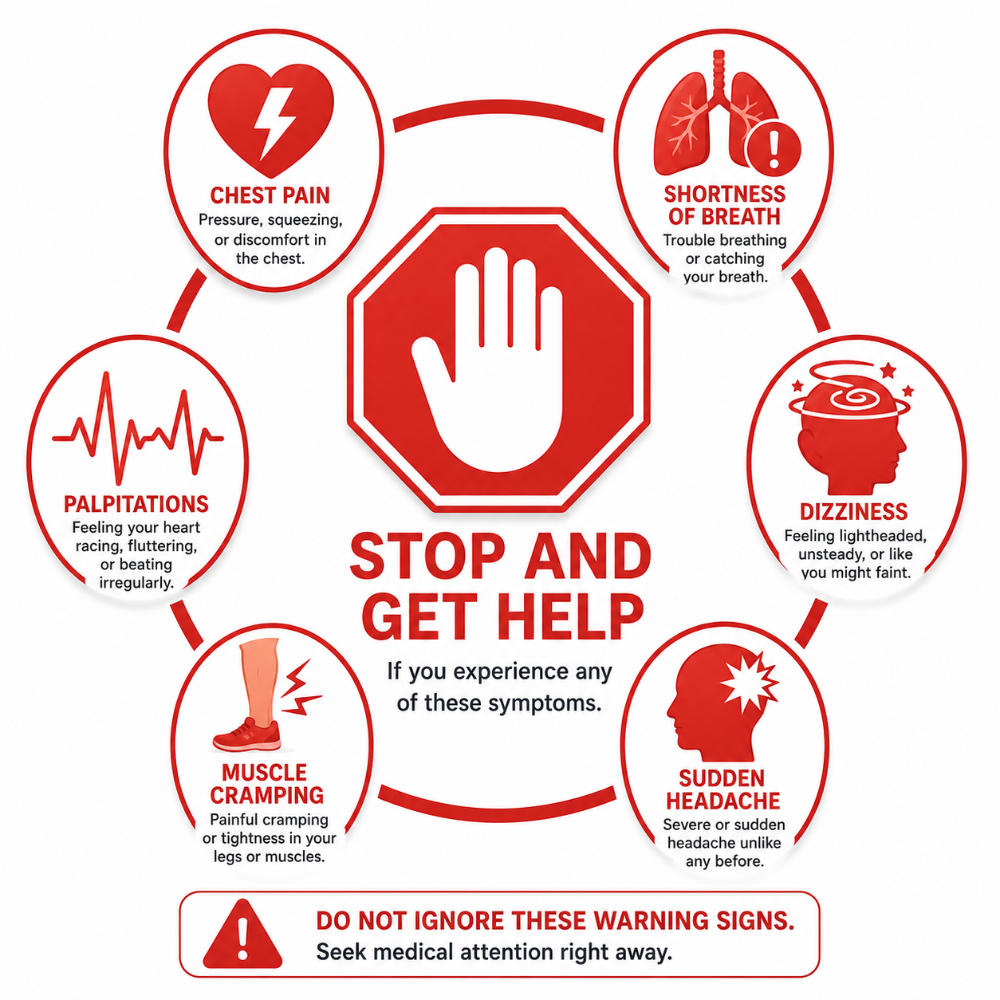
Check before every sessionSuriin bago ang bawat sesyonSusihon sa wala pa ang matag sesyon Suriin bago ing bawat sesyon
Blood pressure before exercise: if systolic >180 mmHg or diastolic >110 mmHg — rest and recheck in 30 minutes. If still elevated, skip exercise for the day and contact your nephrologist. If systolic <90 mmHg — do not exercise. Dialysis patients: do not exercise within 2 hours after HD (hypotension risk).Presyon ng dugo bago mag-ehersisyo: kung ang systolic ay >180 mmHg o ang diastolic ay >110 mmHg — magpahinga at muling suriin pagkatapos ng 30 minuto. Kung nananatiling mataas, preskuhin ang ehersisyo para sa araw na iyon at makipag-ugnayan sa inyong nephrologist. Kung ang systolic ay <90 mmHg — huwag mag-ehersisyo. Mga pasyente ng dialysis: huwag mag-ehersisyo sa loob ng 2 oras pagkatapos ng HD (panganib ng hypotension).Presyon sa dugo sa wala pa mag-ehersisyo: kung ang systolic ay >180 mmHg o ang diastolic ay >110 mmHg — pahulay ug usisaon pag-usab pagkahuman sa 30 minuto. Kung nagpabilin nga taas, preskiyon ang ehersisyo alang sa adlaw ug makig-ugnon sa inyong nephrologist. Kung ang systolic ay <90 mmHg — ayaw mag-ehersisyo. Mga pasyente sa dialysis: ayaw mag-ehersisyo sulod sa 2 oras human sa HD (peligro sa hypotension). Presyon ning daya bago mag-ehersisyo: nung ing systolic ya >180 mmHg o ing diastolic ya >110 mmHg — magpahinga at muling suriin kapabanuan ning 30 minuto. Nung nananatiling matas, preskuhin ing ehersisyo para king aldo a iyun at makipag-ugnayan king inyu nephrologist. Nung ing systolic ya <90 mmHg — eka mag-ehersisyo. Deng pasyente ning dialysis: eka mag-ehersisyo king loob ning 2 oras kapabanuan ning HD (panganib ning hypotension).
Conditions requiring medical clearance firstMga kondisyon na nangangailangan ng medikal na pahintulot munaMga kondisyon nga nagkinahanglan sa medikal nga pahintulot una Deng kondisyon a nangangailangan ning medikal a pahintulot muna
Unstable angina or recent heart attack (<4 weeks) · Uncontrolled arrhythmia · Severe symptomatic aortic stenosis · Decompensated heart failure · Active infection with fever · Recent surgery · Severe anemia (Hgb <80 g/L) · Uncontrolled diabetic neuropathy with loss of foot sensation.Hindi matatag na angina o kamakailang atake sa puso (<4 linggo) · Hindi kontroladong arrhythmia · Matinding symptomatic na aortic stenosis · Decompensated heart failure · Aktibong impeksyon na may lagnat · Kamakailang operasyon · Matinding anemia (Hgb <80 g/L) · Hindi kontroladong diabetic neuropathy na may pagkawala ng sensasyon sa paa.Dili maabtik nga angina o bag-o lang nga atake sa kasingkasing (<4 semana) · Dili kontrolado nga arrhythmia · Grabe nga symptomatic nga aortic stenosis · Decompensated heart failure · Aktibong impeksyon nga adunay hilanat · Bag-o lang nga operasyon · Grabe nga anemia (Hgb <80 g/L) · Dili kontrolado nga diabetic neuropathy nga adunay pagkawala sa sensasyon sa tiil. Ali matatag a angina o kamakailang atake king pusu (<4 lutu) · Ali kontroladong arrhythmia · Matinding symptomatic a aortic stenosis · Decompensated heart failure · Aktibong impeksyon a atin lagnat · Kamakailang operasyon · Matinding anemia (Hgb <80 g/L) · Ali kontroladong diabetic neuropathy a atin pagkaala ning sensasyon king paa.
Warm-Up ExercisesMga Ehersisyo sa Warm-UpMga Ehersisyo sa Warm-Up Deng Ehersisyo king Warm-Up
The warm-up prepares your cardiovascular system, increases blood flow to muscles, and reduces injury risk. In CKD, it also allows blood pressure to adjust gradually — critical for patients prone to orthostatic hypotension.Ang warm-up ay naghahanda ng inyong cardiovascular system, nagpapataas ng daloy ng dugo sa mga kalamnan, at nagpapababa ng panganib ng pinsala. Sa CKD, pinapayagan din nitong unti-unting mag-aayos ang presyon ng dugo — mahalaga para sa mga pasyente na madaling magkaroon ng orthostatic hypotension.Ang warm-up nagpangandam sa inyong cardiovascular system, nagdugang sa daloy sa dugo ngadto sa mga kaunoran, ug nagpaubos sa peligro sa samad. Sa CKD, gitugotan usab niini ang presyon sa dugo nga mag-areglo sa hinay-hinay — kritikal alang sa mga pasyente nga dali makaangkon og orthostatic hypotension. Ing warm-up ya naghahanda ning inyu cardiovascular system, nagpapataas ning daloy ning daya king deng kalamnan, at nagpapababa ning panganib ning pinsala. King CKD, pinapayagan din nitong unti-unting mag-aayos ing presyon ning daya — importante para king deng pasyente a madaling magkaroon ning orthostatic hypotension.
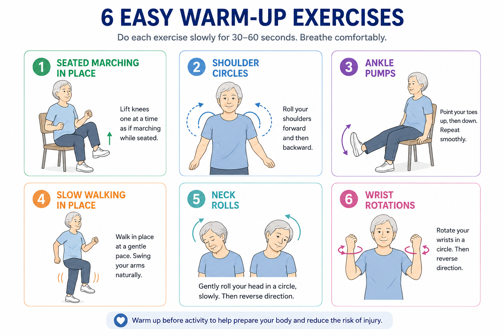
- Sit upright on a chair, feet flat on the floorUmupo nang tuwid sa isang upuan, paa flat sa sahigLingkod nga tuwid sa usa ka silya, tiil flat sa salog Umupo nang tuwid king metung a upuan, paa flat king sahig
- Alternately lift each knee up to hip heightPalitan ang pagangat ng bawat tuhod hanggang sa taas ng balakangPuli-puliong iangat ang matag tuhod hangtod sa taas sa balakang Palitan ing pagangat ning bawat tuhod anggang king taas ning balakang
- Swing opposite arm gently with each stepMalumanay na igulong ang kabaligtarang braso sa bawat hakbangMalumo nga iundong ang kaatbang nga bukton sa matag lakang Malumanay a igulong ing kabaligtarang braso king bawat hakbang
- Pace: 1 lift per second, steady rhythmBilis: 1 angat bawat segundo, matatag na ritmoBilis: 1 angat matag segundo, maabtik nga ritmo Bilis: 1 angat bawat segundo, matatag a ritmo
- Duration: 1–2 minutesTagal: 1–2 minutoTagal: 1–2 minuto Tagal: 1–2 minuto
- Sit or stand comfortably uprightUmupo o tumayo nang komportableng tuwidLingkod o tindog nga komportable ug tuwid Umupo o tumayo nang komportableng tuwid
- Roll both shoulders forward in slow circles × 8I-roll ang parehong balikat pasulong sa mabagal na mga bilog × 8I-roll ang duha ka abaga padulong sa hinay nga mga lingin × 8 I-roll ing parehong balikat pasulong king mabagal a deng bilog × 8
- Then roll backward × 8Pagkatapos i-roll paatras × 8Dayon i-roll pabalik × 8 Kapabanuan i-roll paatras × 8
- Keep movements smooth, no jerkingPanatilihing maayos ang mga galaw, walang biglaanIpadayon ang mga lihok nga mahumok, walay biglaan Panatilihing maayos ing deng galaw, alang biglaan
- Breathe normally throughoutHuminga nang normal sa buong orasGinhawa sa normal sa tibuok oras Huminga nang normal king buong oras
- Sit with feet slightly elevated or flat on floorUmupo na may kaunting taas ang paa o flat sa sahigLingkod nga may gamay nga taas ang tiil o flat sa salog Umupo a atin kaunting taas ing paa o flat king sahig
- Pump both feet up and down (flex and point) × 15I-pump ang parehong paa pataas at pababa (flex at point) × 15I-pump ang duha ka tiil pataas ug paubos (flex ug point) × 15 I-pump ing parehong paa pataas at pababa (flex at point) × 15
- Then circle both ankles clockwise × 8, then counter-clockwise × 8Pagkatapos i-circle ang parehong bukung-bukong clockwise × 8, pagkatapos counter-clockwise × 8Dayon i-circle ang duha ka bukobuko clockwise × 8, dayon counter-clockwise × 8 Kapabanuan i-circle ing parehong bukung-bukong clockwise × 8, kapabanuan counter-clockwise × 8
- Move slowly and deliberatelyGumalaw nang mabagal at may layuninMolihok nga hinay ug may katuyoan Gumalaw nang mabagal at atin layunin
- Stand near a wall or chair for supportTumayo malapit sa dingding o upuan para sa suportaTindog duol sa dingding o silya alang sa suporta Tumayo malapit king dingding o upuan para king suporta
- March gently in place at a very slow paceMalumanay na martsa sa lugar sa napakabagal na bilisMalumo nga martsa sa lugar sa hilabihan ka hinay nga bilis Malumanay a martsa king lugar king napakabagal a bilis
- Gradually increase pace over 2–3 minutesUnti-unting pabilisin ang hakbang sa loob ng 2–3 minutoHinay-hinay nga pagdugang sa bilis sulod sa 2–3 minuto Unti-unting pabilisin ing hakbang king loob ning 2–3 minuto
- Check that you feel stable before moving away from supportTiyaking matatag kayo bago lumayo sa suportaSusihon nga maabtik kamo sa wala pa mopalayo sa suporta Tiyaking matatag kayu bago lumayo king suporta
- Sit tall with shoulders relaxedUmupo nang tuwid na may nakarelax na balikatLingkod nga tuwid nga may nakarelax nga abaga Umupo nang tuwid a atin nakarelax a balikat
- Slowly tilt right ear toward right shoulder — hold 3 secDahan-dahang i-tilt ang kanang tainga patungo sa kanang balikat — hawakan ng 3 segundoHinay-hinay nga i-tilt ang tuo nga dalunggan paingon sa tuo nga abaga — kuptan og 3 segundo Dahan-dahang i-tilt ing kanang tainga patungo king kanang balikat — hawakan ning 3 segundo
- Return to center, tilt left — hold 3 secBumalik sa gitna, i-tilt pakaliwa — hawakan ng 3 segundoBalik sa sentro, i-tilt pakaliwa — kuptan og 3 segundo Bumalik king gitna, i-tilt pakaliwa — hawakan ning 3 segundo
- Chin to chest — hold 3 sec, returnBaba sa dibdib — hawakan ng 3 segundo, bumalikBaba sa dughan — kuptan og 3 segundo, balik Baba king dibdib — hawakan ning 3 segundo, bumalik
- Do NOT roll head backward (cervical stress)HUWAG i-roll ang ulo paatras (stress sa cervical)AYAW i-roll ang ulo pabalik (stress sa cervical) HUWAG i-roll ing ulo paatras (stress king cervical)
- Repeat 3–4 times each directionUlitin ng 3–4 beses sa bawat direksyonUsbon og 3–4 ka beses sa matag direksyon Ulitin ning 3–4 beses king bawat direksyon
- Gently circle both wrists clockwise × 8, then counter-clockwise × 8Malumanay na i-circle ang parehong pulso clockwise × 8, pagkatapos counter-clockwise × 8Malumo nga i-circle ang duha ka pulso clockwise × 8, dayon counter-clockwise × 8 Malumanay a i-circle ing parehong pulso clockwise × 8, kapabanuan counter-clockwise × 8
- Open and close fingers slowly × 10Buksan at isara ang mga daliri nang dahan-dahan × 10Bukha ug isara ang mga tudlo nga hinay × 10 Buksan at isara ing deng daliri nang dahan-dahan × 10
- Gentle prayer stretch: press palms together, lower hands — hold 5 secMalumanay na prayer stretch: pindutin ang mga palad nang magkasama, ibaba ang mga kamay — hawakan ng 5 segundoMalumo nga prayer stretch: piganon ang mga palad nga magkauban, iubos ang mga kamot — kuptan og 5 segundo Malumanay a prayer stretch: pindutin ing deng palad nang magkasama, ibaba ing deng kamay — hawakan ning 5 segundo
- Avoid any movement that causes fistula site painIwasan ang anumang galaw na nagdudulot ng sakit sa fistula siteLikayi ang bisan unsang lihok nga nagdala og sakit sa fistula site Iwasan ing anumang galaw a nagdudulot ning sakit king fistula site
Breathing ExercisesMga Ehersisyo sa PaghingaMga Ehersisyo sa Pagginhawa Deng Ehersisyo king Paghinga
Diaphragmatic breathing reduces sympathetic nervous system activity, lowers blood pressure, reduces anxiety, and improves oxygenation. For CKD patients with fluid overload or pulmonary congestion, breath training also strengthens respiratory muscles and improves dyspnea tolerance.Ang diaphragmatic breathing ay nagpapababa ng aktibidad ng sympathetic nervous system, nagpapababa ng presyon ng dugo, nagpapababa ng pagkabalisa, at nagpapabuti ng oxygenation. Para sa mga pasyente ng CKD na may fluid overload o pulmonary congestion, ang pagsasanay sa paghinga ay nagpapatibay din ng mga kalamnan ng paghinga at nagpapabuti ng toleransya sa dyspnea.Ang diaphragmatic breathing nagpaubos sa aktibidad sa sympathetic nervous system, nagpababa sa presyon sa dugo, nagpababa sa kabalaka, ug nagpabuti sa oxygenation. Alang sa mga pasyente sa CKD nga adunay fluid overload o pulmonary congestion, ang pagsanay sa pagginhawa nagpalig-on usab sa mga kaunoran sa pagginhawa ug nagpabuti sa toleransya sa dyspnea. Ing diaphragmatic breathing ya nagpapababa ning aktibidad ning sympathetic nervous system, nagpapababa ning presyon ning daya, nagpapababa ning pagkabalisa, at nagpapabuti ning oxygenation. Para king deng pasyente ning CKD a atin fluid overload o pulmonary congestion, ing pagsasanay king paghinga ya nagpapatibay din ning deng kalamnan ning paghinga at nagpapabuti ning toleransya king dyspnea.
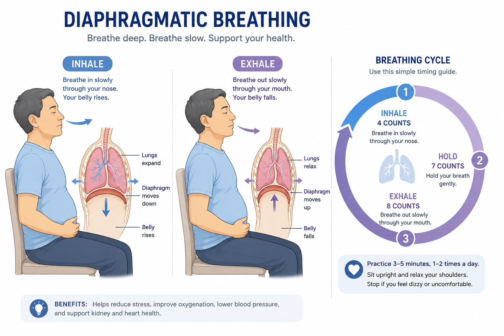
- Lie flat or sit with one hand on chest, one on bellyHumiga nang flat o umupo na may isang kamay sa dibdib, isa sa tiyanHigda nga flat o lingkod nga adunay usa ka kamot sa dughan, usa sa tiyan Humiga nang flat o umupo a atin metung a kamay king dibdib, metung king tiyan
- Inhale slowly through nose for 4 counts — belly should rise, chest stays stillHuminga nang dahan-dahan sa ilong sa loob ng 4 bilang — dapat tumaas ang tiyan, nananatiling hindi gumagalaw ang dibdibGinhawa nga hinay pinaagi sa ilong sulod sa 4 ka ihap — kinahanglan motaas ang tiyan, nagpabilin nga dili molihok ang dughan Huminga nang dahan-dahan king ilong king loob ning 4 bilang — dapat tumaas ing tiyan, nananatiling ali gumagalaw ing dibdib
- Exhale slowly through pursed lips for 6 counts — belly fallsHuminga palabas nang dahan-dahan sa nakadingas na labi sa loob ng 6 bilang — bumabagsak ang tiyanGinhawa palabas nga hinay pinaagi sa nakadingas nga ngabil sulod sa 6 ka ihap — naubusan ang tiyan Huminga palabas nang dahan-dahan king nakadingas a labi king loob ning 6 bilang — bumabagsak ing tiyan
- The hand on your chest should barely moveAng kamay sa inyong dibdib ay halos hindi dapat gumagalawAng kamot sa inyong dughan halos dili kinahanglan molihok Ing kamay king inyu dibdib ya halos ali dapat gumagalaw
- Repeat 8–10 cycles, 2× dailyUlitin ng 8–10 cycle, 2× araw-arawUsbon og 8–10 ka cycle, 2× adlaw-adlaw Ulitin ning 8–10 cycle, 2× aldo-aldo
- Relax your neck and shouldersI-relax ang inyong leeg at balikatI-relax ang inyong liog ug abaga I-relax ing inyu leeg at balikat
- Inhale through nose for 2 countsHuminga sa ilong sa loob ng 2 bilangGinhawa pinaagi sa ilong sulod sa 2 ka ihap Huminga king ilong king loob ning 2 bilang
- Pucker lips as if about to whistleI-pucker ang mga labi na parang susulotI-pucker ang mga ngabil nga daw musipol I-pucker ing deng labi a parang susulot
- Exhale slowly through pursed lips for 4 countsHuminga palabas nang dahan-dahan sa nakadingas na labi sa loob ng 4 bilangGinhawa palabas nga hinay pinaagi sa nakadingas nga ngabil sulod sa 4 ka ihap Huminga palabas nang dahan-dahan king nakadingas a labi king loob ning 4 bilang
- Use during any activity that causes breathlessnessGamitin sa anumang aktibidad na nagdudulot ng paghingalGamiton sa bisan unsang aktibidad nga nagdala og kakulangon sa ginhawa Gamitin king anumang aktibidad a nagdudulot ning paghingal
- Inhale through nose for 4 countsHuminga sa ilong sa loob ng 4 bilangGinhawa pinaagi sa ilong sulod sa 4 ka ihap Huminga king ilong king loob ning 4 bilang
- Hold breath for 4 countsHawakan ang hininga sa loob ng 4 bilangKuptan ang ginhawa sulod sa 4 ka ihap Hawakan ing hininga king loob ning 4 bilang
- Exhale through mouth for 4 countsHuminga palabas sa bibig sa loob ng 4 bilangGinhawa palabas pinaagi sa baba sulod sa 4 ka ihap Huminga palabas king bibig king loob ning 4 bilang
- Hold empty for 4 countsHawakan ang walang laman sa loob ng 4 bilangKuptan ang walay sulod sulod sa 4 ka ihap Hawakan ing alang laman king loob ning 4 bilang
- Repeat 4–6 cyclesUlitin ng 4–6 cycleUsbon og 4–6 ka cycle Ulitin ning 4–6 cycle
- Sit tall, arms at sidesUmupo nang tuwid, mga braso sa gilidLingkod nga tuwid, mga bukton sa kilid Umupo nang tuwid, deng braso king gilid
- Inhale as you raise both arms overhead (2 counts)Huminga habang itinaas ang parehong braso sa itaas ng ulo (2 bilang)Ginhawa samtang giangat ang duha ka bukton ibabaw sa ulo (2 ka ihap) Huminga habang itinaas ing parehong braso king itaas ning ulo (2 bilang)
- Exhale as you lower arms back down (3 counts)Huminga palabas habang ibinababa ang mga braso (3 bilang)Ginhawa palabas samtang giuubos ang mga bukton (3 ka ihap) Huminga palabas habang ibinababa ing deng braso (3 bilang)
- Never hold your breath during any exertionHuwag kailanman hawakan ang hininga sa anumang pagsisikapAyaw gayod kuptan ang ginhawa sa bisan unsang paghago Eka kailanman hawakan ing hininga king anumang pagsisikap
- Repeat 10 times, then restUlitin ng 10 beses, pagkatapos magpahingaUsbon og 10 ka beses, dayon pahulay Ulitin ning 10 beses, kapabanuan magpahinga
Stretching and FlexibilityPagpapahaba at FlexibilityPag-unat ug Flexibility Pagpapahaba at Flexibility
CKD patients have significantly reduced flexibility due to inactivity, fluid retention, and uremic neuropathy. Regular stretching reduces muscle cramping (a major complaint during and after dialysis), improves circulation, and maintains functional range of motion for daily activities.Ang mga pasyente ng CKD ay may makabuluhang pagbaba ng flexibility dahil sa kawalan ng galaw, pagtitipon ng likido, at uremic neuropathy. Ang regular na pagpapahaba ay nagpapababa ng cramp ng kalamnan (isang pangunahing reklamo sa panahon at pagkatapos ng dialysis), nagpapabuti ng sirkulasyon, at nagpapanatili ng functional na saklaw ng galaw para sa mga pang-araw-araw na gawain.Ang mga pasyente sa CKD adunay makabuluhang pagbaba sa flexibility tungod sa kawala sa galaw, pagtipon sa tubig, ug uremic neuropathy. Ang regular nga pag-unat nagpababa sa cramp sa kaunoran (usa ka pangunahing reklamo sa panahon ug human sa dialysis), nagpabuti sa sirkulasyon, ug nagpadayon sa functional nga saklaw sa lihok alang sa mga adlaw-adlaw nga gawi. Ing deng pasyente ning CKD ya atin makabuluhang pagbaba ning flexibility dahil king kawalan ning galaw, pagtitipon ning likido, at uremic neuropathy. Ing regular a pagpapahaba ya nagpapababa ning cramp ning kalamnan (metung a pangunahing reklamo king panahon at kapabanuan ning dialysis), nagpapabuti ning sirkulasyon, at nagpapanatili ning functional a saklaw ning galaw para king deng aldo-aldong a gawain.
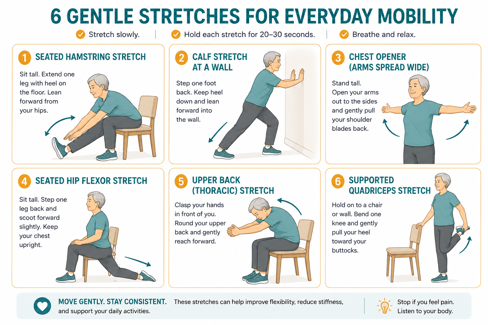
- Sit at edge of chair, extend one leg forwardUmupo sa gilid ng upuan, i-extend ang isang binti pasulongLingkod sa kilid sa silya, i-extend ang usa ka binti padulong Umupo king gilid ning upuan, i-extend ing metung a binti pasulong
- Keep foot flexed (toes pointing up)Panatilihing naka-flex ang paa (mga daliri ng paa nakaturo pataas)Ipadayon ang paa nga naka-flex (mga tudlo sa tiil nagtutok pataas) Panatilihing naka-flex ing paa (deng daliri ning paa nakaturo pataas)
- Sit tall and hinge slightly forward at hips until you feel a gentle pull behind the kneeUmupo nang tuwid at bahagyang yumuko pasulong sa balakang hanggang maramdaman ang malumanay na paghila sa likod ng tuhodLingkod nga tuwid ug bahagyang yukbo padulong sa balakang hangtod masinati ang malumo nga paghila sa luyo sa tuhod Umupo nang tuwid at bahagyang yumuko pasulong king balakang anggang maramdaman ing malumanay a paghila king likod ning tuhod
- Hold 20–30 seconds — breathe normallyHawakan ng 20–30 segundo — huminga nang normalKuptan og 20–30 segundo — ginhawa sa normal Hawakan ning 20–30 segundo — huminga nang normal
- Repeat on the other legUlitin sa kabila pang bintiUsbon sa pikas nga binti Ulitin king kabila pang binti
- Stand facing a wall, hands flat on wall for supportTumayo na nakaharap sa dingding, mga kamay flat sa dingding para sa suportaTindog nga nakaatubang sa dingding, mga kamot flat sa dingding alang sa suporta Tumayo a nakaharap king dingding, deng kamay flat king dingding para king suporta
- Step one foot back, keep heel flat on floorIsulong ang isang paa paatras, panatilihing flat ang sakong sa sahigIsulong ang usa ka tiil pabalik, ipadayon ang tikod nga flat sa salog Isulong ing metung a paa paatras, panatilihing flat ing sakong king sahig
- Bend front knee gently until you feel calf stretch in back legBahagyang i-bend ang harapang tuhod hanggang maramdaman ang calf stretch sa likurang bintiBahagyang i-bend ang unang tuhod hangtod masinati ang calf stretch sa likurang binti Bahagyang i-bend ing harapang tuhod anggang maramdaman ing calf stretch king likurang binti
- Hold 30 seconds — do not bounceHawakan ng 30 segundo — huwag mag-bounceKuptan og 30 segundo — ayaw mag-bounce Hawakan ning 30 segundo — eka mag-bounce
- Switch sides and repeatPalitan ang gilid at ulitinIlisan ang kilid ug usbon Palitan ing gilid at ulitin
- Clasp hands behind your backI-clasp ang mga kamay sa likod ninyoI-clasp ang mga kamot sa luyo ninyo I-clasp ing deng kamay king likod ninyo
- Gently squeeze shoulder blades togetherMalumanay na i-squeeze ang mga shoulder blade nang magkasamaMalumo nga i-squeeze ang mga shoulder blade nga magkauban Malumanay a i-squeeze ing deng shoulder blade nang magkasama
- Lift chest upward slightly — breathe in deeplyItaas ang dibdib nang bahagya — huminga nang malalimIangat ang dughan nga gamay — ginhawa nga lawom Itaas ing dibdib nang bahagya — huminga nang malalim
- Hold 20 seconds — exhale slowlyHawakan ng 20 segundo — huminga palabas nang dahan-dahanKuptan og 20 segundo — ginhawa palabas nga hinay Hawakan ning 20 segundo — huminga palabas nang dahan-dahan
- Release and repeat 3 timesBitawan at ulitin ng 3 besesBuhian ug usbon og 3 ka beses Bitawan at ulitin ning 3 beses
- Sit sideways at the edge of the chairUmupo nang pahilig sa gilid ng upuanLingkod nga pahilit sa kilid sa silya Umupo nang pahilig king gilid ning upuan
- Let the outer leg hang off the edge with knee bent, foot toward floorHayaan ang panlabas na binti na mabitay sa gilid na nakatekod ang tuhod, paa nakaharap sa sahigPabayai ang gawas nga binti nga mag-awit sa kilid nga nakabalik ang tuhod, tiil nakaatubang sa salog Hayaan ing panlabas a binti a mabitay king gilid a nakatekod ing tuhod, paa nakaharap king sahig
- Sit tall and feel a gentle stretch in the front of that hipUmupo nang tuwid at maramdaman ang malumanay na pagpapahaba sa harapan ng balakangLingkod nga tuwid ug masinati ang malumo nga pag-unat sa atubangan sa balakang Umupo nang tuwid at maramdaman ing malumanay a pagpapahaba king harapan ning balakang
- Hold 20–30 seconds, switch sidesHawakan ng 20–30 segundo, palitan ang gilidKuptan og 20–30 segundo, ilisan ang kilid Hawakan ning 20–30 segundo, palitan ing gilid
- Hold chair arm for safetyHawakan ang braso ng upuan para sa kaligtasanKuptan ang bukton sa silya alang sa kaluwasan Hawakan ing braso ning upuan para king kaligtasan
- Sit in chair, cross arms and hug your own shouldersUmupo sa upuan, i-cross ang mga braso at yakapin ang sariling mga balikatLingkod sa silya, i-cross ang mga bukton ug yakapon ang kaugalingon nga mga abaga Umupo king upuan, i-cross ing deng braso at yakapin ing sariling deng balikat
- Round forward gently, chin to chestMalumanay na umikot pasulong, baba sa dibdibMalumo nga likoron padulong, baba sa dughan Malumanay a umikot pasulong, baba king dibdib
- Feel stretch between shoulder bladesMaramdaman ang pagpapahaba sa pagitan ng mga shoulder bladeMasinati ang pag-unat tali-tali sa mga shoulder blade Maramdaman ing pagpapahaba king pagitan ning deng shoulder blade
- Hold 20 seconds — breathe into your backHawakan ng 20 segundo — huminga papunta sa inyong likodKuptan og 20 segundo — ginhawa ngadto sa inyong likod Hawakan ning 20 segundo — huminga papunta king inyu likod
- Then sit tall and open arms wide to reversePagkatapos umupo nang tuwid at buksan ang mga braso nang malawak upang baligtarinDayon lingkod nga tuwid ug bukha ang mga bukton nga halapad aron baligtaron Kapabanuan umupo nang tuwid at buksan ing deng braso nang malawak upang baligtarin
- Stand near a wall or chair for supportTumayo malapit sa dingding o upuan para sa suportaTindog duol sa dingding o silya alang sa suporta Tumayo malapit king dingding o upuan para king suporta
- Bend one knee, bring heel toward buttockI-bend ang isang tuhod, dalhin ang sakong patungo sa puwitI-bend ang usa ka tuhod, dad-on ang tikod paingon sa lubot I-bend ing metung a tuhod, dalhin ing sakong patungo king puwit
- Hold ankle with same-side hand (use a strap if needed)Hawakan ang bukung-bukong ng parehong kamay (gumamit ng strap kung kailangan)Kuptan ang bukobuko sa pareho nga kamot (gamiton ang strap kung gikinahanglan) Hawakan ing bukung-bukong ning parehong kamay (gumamit ning strap nung kailangan)
- Keep knees together, stand tallPanatilihing magkasama ang mga tuhod, tumayo nang tuwidIpadayon ang mga tuhod nga magkauban, tindog nga tuwid Panatilihing magkasama ing deng tuhod, tumayo nang tuwid
- Hold 30 seconds, switch sidesHawakan ng 30 segundo, palitan ang gilidKuptan og 30 segundo, ilisan ang kilid Hawakan ning 30 segundo, palitan ing gilid
Balance and Proprioception ExercisesMga Ehersisyo sa Balanse at ProprioceptionMga Ehersisyo sa Balanse ug Proprioception Deng Ehersisyo king Balanse at Proprioception
CKD patients have 2–3× higher fall rates than age-matched healthy adults — due to peripheral neuropathy, muscle weakness, postural hypotension, and medication side effects. Balance training is essential and should be included every session.Ang mga pasyente ng CKD ay may 2–3× na mas mataas na rate ng pagbagsak kaysa sa mga malusog na matatanda sa parehong edad — dahil sa peripheral neuropathy, kahinaan ng kalamnan, postural hypotension, at mga side effect ng gamot. Ang pagsasanay sa balanse ay mahalaga at dapat isama sa bawat sesyon.Ang mga pasyente sa CKD adunay 2–3× nga mas taas nga rate sa pagkahulog kaysa sa mga malusog nga hamtong sa pareho nga edad — tungod sa peripheral neuropathy, kahuyang sa kaunoran, postural hypotension, ug mga side effect sa tambal. Ang pagsanay sa balanse mahinungdanon ug kinahanglan iapil sa matag sesyon. Ing deng pasyente ning CKD ya atin 2–3× a mas matas a rate ning pagbagsak kaysa king deng malusog a matatanda king parehong edad — dahil king peripheral neuropathy, kahinaan ning kalamnan, postural hypotension, at deng side effect ning gamut. Ing pagsasanay king balanse ya importante at dapat isama king bawat sesyon.
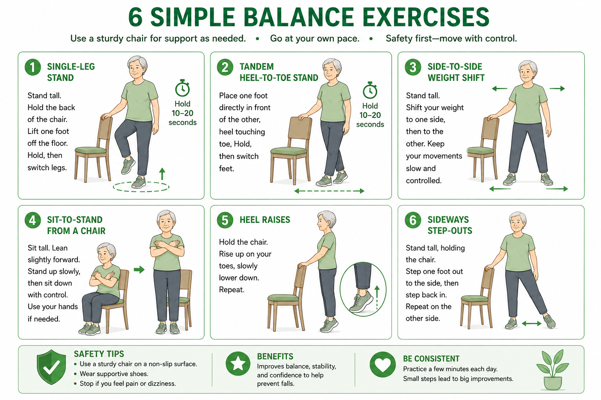
- Stand near wall or chair, fingertips on surface for safetyTumayo malapit sa dingding o upuan, mga dulo ng daliri sa ibabaw para sa kaligtasanTindog duol sa dingding o silya, mga dulo sa tudlo sa ibabaw alang sa kaluwasan Tumayo malapit king dingding o upuan, deng dulo ning daliri king ibabaw para king kaligtasan
- Shift weight to one foot, lift other foot slightly off floorIlipat ang bigat sa isang paa, itaas nang bahagya ang kabilang paa mula sa sahigIlipat ang gibug-aton sa usa ka tiil, iangat og gamay ang pikas nga tiil gikan sa salog Ilipat ing bigat king metung a paa, itaas nang bahagya ing kabilang paa mula king sahig
- Hold 10–30 seconds — eyes open firstHawakan ng 10–30 segundo — mata muna ang bukasKuptan og 10–30 segundo — mata muna ang bukas Hawakan ning 10–30 segundo — mata muna ing bukas
- Aim for 3 repetitions per legLayunin ang 3 repetitions bawat bintiTumong og 3 repetitions matag binti Layunin ing 3 repetitions bawat binti
- Progress: reduce finger contact → eyes closed when confidentPag-unlad: bawasan ang kontak ng daliri → isara ang mata kapag confident naPag-uswag: pagawasan ang kontak sa tudlo → isira ang mata kung confident na Pag-unlad: bawasan ing kontak ning daliri → isara ing mata nung confident a
- Stand with one foot directly in front of the other, heel touching toesTumayo na may isang paa nang direkta sa harap ng isa pa, sakong nakadikit sa mga daliri ng paaTindog nga adunay usa ka tiil nga direkta sa atubangan sa lain, tikod nakakabit sa mga tudlo sa tiil Tumayo a atin metung a paa nang direkta king harap ning metung pa, sakong nakadikit king deng daliri ning paa
- Arms out to sides for balanceMga braso sa gilid para sa balanseMga bukton sa kilid alang sa balanse Deng braso king gilid para king balanse
- Hold 20 seconds, switch which foot is in frontHawakan ng 20 segundo, palitan kung aling paa ang nasa harapKuptan og 20 segundo, ilisan kung aning tiil ang naa sa atubangan Hawakan ning 20 segundo, palitan nung aling paa ing nasa harap
- Keep fingertips near wall for safetyPanatilihing malapit ang mga dulo ng daliri sa dingding para sa kaligtasanIpadayon ang mga dulo sa tudlo nga duol sa dingding alang sa kaluwasan Panatilihing malapit ing deng dulo ning daliri king dingding para king kaligtasan
- Progress: tandem walking — 10 steps heel-to-toe along a linePag-unlad: tandem walking — 10 hakbang sakong-sa-daliri ng paa sa isang linyaPag-uswag: tandem walking — 10 lakang tikod-sa-tudlo sa tiil sa usa ka linya Pag-unlad: tandem walking — 10 hakbang sakong-king-daliri ning paa king metung a linya
- Stand feet shoulder-width apart, hands on chair backTumayo na may mga paa na katawang lapad ang pagitan, mga kamay sa likod ng upuanTindog nga adunay mga tiil nga lapad sa abaga ang gilay-on, mga kamot sa luyo sa silya Tumayo a atin deng paa a katawang lapad ing pagitan, deng kamay king likod ning upuan
- Slowly shift weight to right foot — lift left heel slightlyDahan-dahang ilipat ang bigat sa kanang paa — itaas nang bahagya ang kaliwang sakongHinay-hinay nga ilipat ang gibug-aton sa tuo nga tiil — iangat og gamay ang wala nga tikod Dahan-dahang ilipat ing bigat king kanang paa — itaas nang bahagya ing kaliwang sakong
- Hold 3 seconds, shift to left — lift right heel slightlyHawakan ng 3 segundo, ilipat pakaliwa — itaas nang bahagya ang kanang sakongKuptan og 3 segundo, ilipat pakaliwa — iangat og gamay ang tuo nga tikod Hawakan ning 3 segundo, ilipat pakaliwa — itaas nang bahagya ing kanang sakong
- Rhythm: slow and controlled, not swayingRitmo: mabagal at kontrolado, hindi nag-uugaRitmo: hinay ug kontrolado, dili naghuyanghuyang Ritmo: mabagal at kontrolado, ali nag-uuga
- 10 repetitions each side10 repetitions bawat gilid10 repetitions matag kilid 10 repetitions bawat gilid
- Sit at front half of chair, feet flat, hip-width apartUmupo sa harapang kalahati ng upuan, mga paa flat, lapad ng balakang ang pagitanLingkod sa unang katunga sa silya, mga tiil flat, lapad sa balakang ang gilay-on Umupo king harapang kalahati ning upuan, deng paa flat, lapad ning balakang ing pagitan
- Lean slightly forward, nose over toesBahagyang yumuko pasulong, ilong sa itaas ng mga daliri ng paaBahagyang yukbo padulong, ilong ibabaw sa mga tudlo sa tiil Bahagyang yumuko pasulong, ilong king itaas ning deng daliri ning paa
- Push through heels and stand — exhale as you riseItulak sa pamamagitan ng mga sakong at tumayo — huminga palabas habang bumabangonItulod pinaagi sa mga tikod ug tindog — ginhawa palabas samtang mobangon Itulak king pamamagitan ning deng sakong at tumayo — huminga palabas habang bumabangon
- Pause fully upright for 2 secondsHuminto nang buong tuwid sa loob ng 2 segundoHunong nga hingpit nga tuwid sulod sa 2 segundo Huminto nang buong tuwid king loob ning 2 segundo
- Lower slowly back to seat — inhale as you lowerDahan-dahang ibaba pabalik sa upuan — huminga habang bumababaIubos nga hinay pabalik sa lingkoran — ginhawa samtang moubus Dahan-dahang ibaba pabalik king upuan — huminga habang bumababa
- Start with hands on armrests, progress to arms crossed on chestMagsimula na may mga kamay sa armrest, mag-unlad sa mga braso na nakakrus sa dibdibSugdi nga adunay mga kamot sa armrest, mosulong sa mga bukton nga nakakrus sa dughan Magsimula a atin deng kamay king armrest, mag-unlad king deng braso a nakakrus king dibdib
- Stand behind chair, hands lightly on back for supportTumayo sa likod ng upuan, mga kamay nang magaan sa likod para sa suportaTindog sa luyo sa silya, mga kamot nga magaan sa luyo alang sa suporta Tumayo king likod ning upuan, deng kamay nang magaan king likod para king suporta
- Rise up on tiptoes — hold 2 secondsBumangon sa mga dulo ng paa — hawakan ng 2 segundoBangon sa mga dulo sa tiil — kuptan og 2 segundo Bumangon king deng dulo ning paa — hawakan ning 2 segundo
- Lower slowly — count 3 seconds going downIbaba nang dahan-dahan — bilangin ang 3 segundo pababaIubos nga hinay — ihap og 3 segundo paubos Ibaba nang dahan-dahan — bilangin ing 3 segundo pababa
- Then rock back on heels, lift toes off floor — hold 2 secondsPagkatapos bumalik sa mga sakong, itaas ang mga daliri ng paa mula sa sahig — hawakan ng 2 segundoDayon ibayaw sa mga tikod, iangat ang mga tudlo sa tiil gikan sa salog — kuptan og 2 segundo Kapabanuan bumalik king deng sakong, itaas ing deng daliri ning paa mula king sahig — hawakan ning 2 segundo
- 15 repetitions of each movement15 repetitions ng bawat galaw15 repetitions sa matag lihok 15 repetitions ning bawat galaw
- Stand near wall for supportTumayo malapit sa dingding para sa suportaTindog duol sa dingding alang sa suporta Tumayo malapit king dingding para king suporta
- Step one foot out to the side — shoulder-widthHumakbang ng isang paa sa gilid — lapad ng balikatLakang sa usa ka tiil sa kilid — lapad sa abaga Humakbang ning metung a paa king gilid — lapad ning balikat
- Bring the other foot to meet it — controlledDalhin ang kabilang paa upang magsama — kontroladoDad-on ang pikas nga tiil aron magtagbo — kontrolado Dalhin ing kabilang paa upang magsama — kontrolado
- 10 steps right, 10 steps left10 hakbang sa kanan, 10 hakbang sa kaliwa10 lakang sa tuo, 10 lakang sa wala 10 hakbang king kanan, 10 hakbang king kaliwa
- Progress: add light resistance band around anklesPag-unlad: magdagdag ng magaang na resistance band sa paligid ng mga bukung-bukongPag-uswag: magdugang og magaan nga resistance band sa palibot sa mga bukobuko Pag-unlad: magdagdag ning magaang a resistance band king paligid ning deng bukung-bukong
Aerobic / Cardiovascular ExerciseAerobic / Cardiovascular na EhersisyoAerobic / Cardiovascular nga Ehersisyo Aerobic / Cardiovascular a Ehersisyo
Aerobic exercise is the most important component for cardiovascular protection in CKD. KDIGO 2024 recommends ≥150 minutes per week of moderate-intensity aerobic activity. Start with whatever duration you can manage — even 5 minutes — and build slowly.Ang aerobic exercise ang pinakamahalagang bahagi para sa cardiovascular na proteksyon sa CKD. Inirerekomenda ng KDIGO 2024 ang ≥150 minuto bawat linggo ng moderate-intensity aerobic activity. Magsimula sa anumang tagal na kaya ninyo — kahit 5 minuto — at dahan-dahang palakasin.Ang aerobic exercise ang labing importante nga bahagi alang sa cardiovascular nga proteksyon sa CKD. Girekomendar sa KDIGO 2024 ang ≥150 minuto matag semana sa moderate-intensity aerobic activity. Sugdi sa bisan unsang tagal nga kaya ninyo — bisan 5 minuto — ug hinay-hinay nga pagduganon. Ing aerobic exercise ing pinakamahalagang bahagi para king cardiovascular a proteksyon king CKD. Inirerekomenda ning KDIGO 2024 ing ≥150 minuto bawat lutu ning moderate-intensity aerobic activity. Magsimula king anumang tagal a kaya ninyo — kahit 5 minuto — at dahan-dahang palakasin.
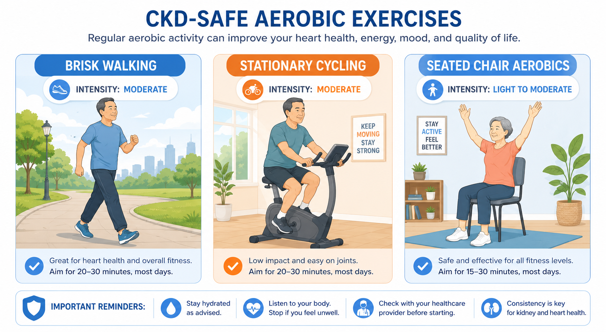
Walking is the gold standard for CKDAng paglalakad ang gold standard para sa CKDAng paglakaw ang gold standard alang sa CKD Ing paglalakad ing gold standard para king CKD
Walking requires no equipment, is low-impact on the kidneys and joints, can be done anywhere, and has the strongest evidence base for CKD cardiovascular benefit. Start with 5–10 minutes daily and add 2 minutes per week until reaching 30 minutes. Outdoor walking in the morning is ideal — natural light helps regulate the circadian clock, which independently benefits kidney function.Ang paglalakad ay hindi nangangailangan ng kagamitan, mababa ang epekto sa mga bato at kasukasuan, maaaring gawin kahit saan, at mayroon itong pinakamalakas na base ng ebidensya para sa cardiovascular na benepisyo ng CKD. Magsimula sa 5–10 minuto araw-araw at magdagdag ng 2 minuto bawat linggo hanggang maabot ang 30 minuto. Ang paglalakad sa labas sa umaga ay ideal — ang natural na liwanag ay tumutulong sa pag-regulate ng circadian clock, na independyenteng nagbibigay ng benepisyo sa pag-andar ng bato.Ang paglakaw dili kinahanglan og kagamitan, ubos ang epekto sa mga kidney ug kasukasoan, mahimo bisan asa, ug adunay pinakakusgan nga base sa ebidensya alang sa cardiovascular nga benepisyo sa CKD. Sugdi sa 5–10 minuto adlaw-adlaw ug magdugang og 2 minuto matag semana hangtod maabot ang 30 minuto. Ang paglakaw sa gawas sa buntag mao ang ideal — ang natural nga kahayag nagtabang sa pag-regulate sa circadian clock, nga independyenteng naghatag og benepisyo sa paglihok sa kidney. Ing paglalakad ya ali nangangailangan ning kagamitan, mababa ing epekto king deng batu at kasukasuan, maaaring gawin kahit saan, at mayroon itong pinakamalakas a base ning ebidensya para king cardiovascular a benepisyo ning CKD. Magsimula king 5–10 minuto aldo-aldo at magdagdag ning 2 minuto bawat lutu anggang maabot ing 30 minuto. Ing paglalakad king labas king umaga ya ideal — ing natural a liwanag ya tumutulong king pag-regulate ning circadian clock, a independyenteng nagbibigay ning benepisyo king pag-andar ning batu.
- Begin at comfortable pace for 5 minutesMagsimula sa komportableng bilis sa loob ng 5 minutoSugdi sa komportable nga bilis sulod sa 5 minuto Magsimula king komportableng bilis king loob ning 5 minuto
- Increase to brisk pace — slightly breathless but conversationalDagdagan sa mabilis na bilis — bahagyang hingal ngunit kaya pa makipag-usapDugangan sa paspas nga bilis — bahagyang kakulangon sa ginhawa apan kaya pa mag-istorya Dagdagan king mabilis a bilis — bahagyang hingal ngarud kaya pa makipag-usap
- Maintain for target durationPanatilihin para sa target na tagalIpadayon alang sa target nga tagal Panatilihin para king target a tagal
- Cool down at slow pace for 3–5 minutesMag-cool down sa mabagal na bilis sa loob ng 3–5 minutoMag-cool down sa hinay nga bilis sulod sa 3–5 minuto Mag-cool down king mabagal a bilis king loob ning 3–5 minuto
- Hydration: small sips only (per fluid restriction if on dialysis)Hydration: maliliit na higop lamang (ayon sa fluid restriction kung naka-dialysis)Hydration: gagmay lang nga higop (sumala sa fluid restriction kung naka-dialysis) Hydration: maliliit a higop lamang (ayon king fluid restriction nung naka-dialysis)
- Set resistance to very low initiallyI-set ang resistance sa napakababa sa simulaI-set ang resistance sa hilabihan ka ubos sa sinugdan I-set ing resistance king napakababa king simula
- Pedal at comfortable cadence — 50–60 rpmMag-pedal sa komportableng cadence — 50–60 rpmMag-pedal sa komportable nga cadence — 50–60 rpm Mag-pedal king komportableng cadence — 50–60 rpm
- Maintain RPE 3–5Panatilihin ang RPE 3–5Ipadayon ang RPE 3–5 Panatilihin ing RPE 3–5
- Progress: increase duration before increasing resistancePag-unlad: dagdagan ang tagal bago dagdagan ang resistancePag-uswag: dugangan ang tagal sa wala pa dugangan ang resistance Pag-unlad: dagdagan ing tagal bago dagdagan ing resistance
- During HD: pedal for 30 min during first 2 hours of sessionSa panahon ng HD: mag-pedal ng 30 minuto sa unang 2 oras ng sesyonSa panahon sa HD: mag-pedal og 30 minuto sa unang 2 oras sa sesyon King panahon ning HD: mag-pedal ning 30 minuto king unang 2 oras ning sesyon
- Seated marching with arm swings — 2 minNakaupo na martsa na may pag-swing ng braso — 2 minutoNaklingkod nga martsa nga adunay pag-swing sa bukton — 2 minuto Nakaupo a martsa a atin pag-swing ning braso — 2 minuto
- Seated punches alternating arms — 1 minNakaupo na mga suntok na pinalilitan ang mga braso — 1 minutoNaklingkod nga mga suntok nga gipalipatan ang mga bukton — 1 minuto Nakaupo a deng suntok a pinalilitan ing deng braso — 1 minuto
- Seated knee lifts with opposite elbow touch — 2 minNakaupo na angat ng tuhod na may kadikit ng kabaligtarang siko — 2 minutoNaklingkod nga angat sa tuhod nga adunay kadikit sa kaatbang nga siko — 2 minuto Nakaupo a angat ning tuhod a atin kadikit ning kabaligtarang siko — 2 minuto
- Seated step-outs with arms reaching overhead — 2 minNakaupo na step-out na may mga braso na umaabot sa itaas — 2 minutoNaklingkod nga step-out nga adunay mga bukton nga miabot sa ibabaw — 2 minuto Nakaupo a step-out a atin deng braso a umaabot king itaas — 2 minuto
- Repeat circuit 2–3 times with 1-min rest between roundsUlitin ang circuit ng 2–3 beses na may 1-minutong pahinga sa pagitan ng mga roundUsbon ang circuit og 2–3 ka beses nga adunay 1-minutong pahulay tali-tali sa mga round Ulitin ing circuit ning 2–3 beses a atin 1-minutong pahinga king pagitan ning deng round
- Walk at comfortable pace for 3 minutesMaglakad sa komportableng bilis sa loob ng 3 minutoMaglakaw sa komportable nga bilis sulod sa 3 minuto Maglakad king komportableng bilis king loob ning 3 minuto
- Walk at brisk pace for 2 minutes (RPE 4–5)Maglakad sa mabilis na bilis sa loob ng 2 minuto (RPE 4–5)Maglakaw sa paspas nga bilis sulod sa 2 minuto (RPE 4–5) Maglakad king mabilis a bilis king loob ning 2 minuto (RPE 4–5)
- Return to comfortable pace for 3 minutesBumalik sa komportableng bilis sa loob ng 3 minutoBalik sa komportable nga bilis sulod sa 3 minuto Bumalik king komportableng bilis king loob ning 3 minuto
- Repeat 3–4 cycles totalUlitin ng 3–4 cycle kabuuanUsbon og 3–4 ka cycle sa tibuok Ulitin ning 3–4 cycle kabuuan
- Build up to: 1 min easy / 1 min brisk as fitness improvesMag-build up sa: 1 minuto madali / 1 minuto mabilis habang nagpapabuti ang fitnessMag-build up ngadto sa: 1 minuto sayon / 1 minuto paspas samtang nagpabuti ang fitness Mag-build up king: 1 minuto madali / 1 minuto mabilis habang nagpapabuti ing fitness
Strength and Resistance ExercisesMga Ehersisyo sa Lakas at ResistanceMga Ehersisyo sa Kusog ug Resistance Deng Ehersisyo king Lakas at Resistance
Muscle wasting (sarcopenia) affects up to 60% of dialysis patients and is a major driver of functional decline, hospitalization, and mortality. Resistance training 2–3× per week is the only intervention proven to reverse it. Use light resistance — bodyweight, resistance bands, or water bottles as weights.Ang pagkawala ng kalamnan (sarcopenia) ay nakakaapekto sa hanggang 60% ng mga pasyente ng dialysis at isang pangunahing dahilan ng functional decline, pag-ospital, at mortalidad. Ang resistance training ng 2–3× bawat linggo ang tanging interbensyon na napatunayang nakababaligtad nito. Gumamit ng magaang na resistance — bodyweight, mga resistance band, o mga bote ng tubig bilang timbang.Ang pagkawala sa kaunoran (sarcopenia) nakaapekto sa hangtod sa 60% sa mga pasyente sa dialysis ug usa ka pangunahing hinungdan sa functional decline, pag-ospital, ug mortalidad. Ang resistance training og 2–3× matag semana ang bugtong interbensyon nga napatunayang nakabaligtad niini. Gamiton ang magaan nga resistance — bodyweight, mga resistance band, o mga bote sa tubig isip timbang. Ing pagkaala ning kalamnan (sarcopenia) ya nakakaapekto king anggang 60% ning deng pasyente ning dialysis at metung a pangunahing dahilan ning functional decline, pag-ospital, at mortalidad. Ing resistance training ning 2–3× bawat lutu ing tanging interbensyon a napatunayang nakababaligtad nini. Gumamit ning magaang a resistance — bodyweight, deng resistance band, o deng bote ning danum bilang timbang.
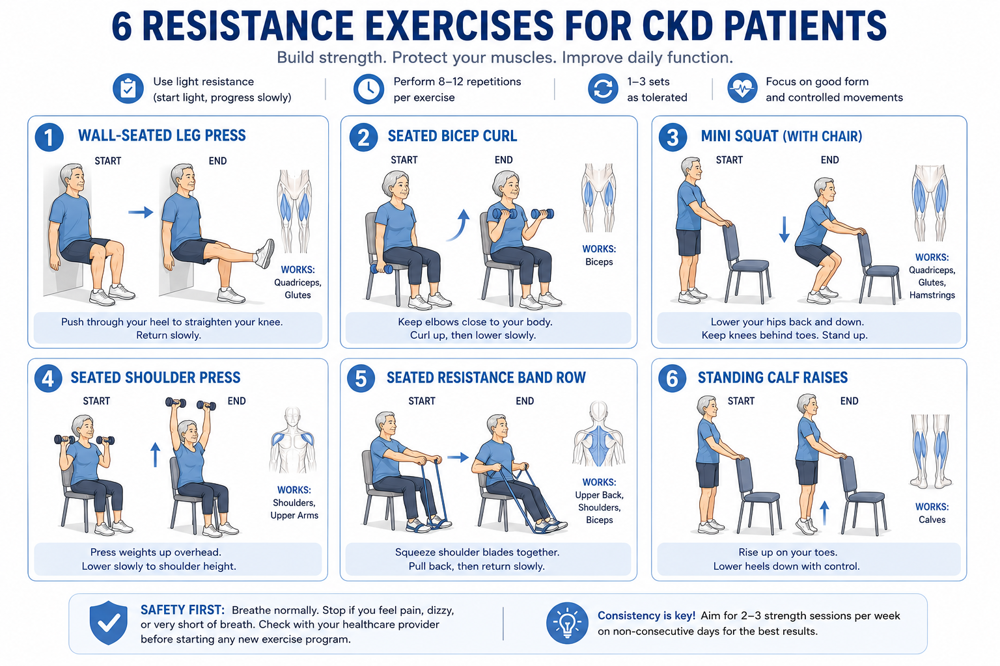
Key safety rules for resistance exercise in CKDMga pangunahing patakaran sa kaligtasan para sa resistance exercise sa CKDMga pangunahing patakaran sa kaluwasan alang sa resistance exercise sa CKD Deng pangunahing patakaran king kaligtasan para king resistance exercise king CKD
- Always exhale on exertion (the effort phase) — never hold your breath (Valsalva maneuver raises BP dangerously)Laging huminga palabas sa pagsisikap (ang effort phase) — huwag kailanman hawakan ang hininga (ang Valsalva maneuver ay mapanganib na nagpapataas ng BP)Kanunay nga ginhawa palabas sa paghago (ang effort phase) — ayaw gayod kuptan ang ginhawa (ang Valsalva maneuver mapanganib nga nagpataas sa BP) Pirming huminga palabas king pagsisikap (ing effort phase) — eka kailanman hawakan ing hininga (ing Valsalva maneuver ya mapanganib a nagpapataas ning BP)
- Start with bodyweight only for 4 weeks before adding any external resistanceMagsimula sa bodyweight lamang sa loob ng 4 na linggo bago magdagdag ng anumang external resistanceSugdi sa bodyweight lamang sulod sa 4 ka semana sa wala pa magdugang og bisan unsang external resistance Magsimula king bodyweight lamang king loob ning 4 a lutu bago magdagdag ning anumang external resistance
- Do not exercise the fistula arm with weights — use opposite arm onlyHuwag mag-ehersisyo ang braso ng fistula gamit ang mga timbang — gamitin lamang ang kabaligtarang brasoAyaw mag-ehersisyo ang bukton sa fistula gamit ang mga timbang — gamiton lamang ang kaatbang nga bukton Eka mag-ehersisyo ing braso ning fistula gamit ing deng timbang — gamitin lamang ing kabaligtarang braso
- Stop if any access site discomfort, excessive muscle cramping, or BP symptomsHuminto kung may discomfort sa access site, labis na cramp ng kalamnan, o mga sintomas ng BPHunong kung adunay discomfort sa access site, sobra nga cramp sa kaunoran, o mga sintomas sa BP Huminto nung atin discomfort king access site, labis a cramp ning kalamnan, o deng sintomas ning BP
- Sit in chair facing wall, feet flat on wall at knee heightUmupo sa upuan na nakaharap sa dingding, mga paa flat sa dingding sa taas ng tuhodLingkod sa silya nga nakaatubang sa dingding, mga tiil flat sa dingding sa taas sa tuhod Umupo king upuan a nakaharap king dingding, deng paa flat king dingding king taas ning tuhod
- Push feet into wall — exhale as you pressItulak ang mga paa sa dingding — huminga palabas habang nagpi-pressItulod ang mga tiil sa dingding — ginhawa palabas samtang nagpi-press Itulak ing deng paa king dingding — huminga palabas habang nagpi-press
- Hold 2 seconds at full extensionHawakan ng 2 segundo sa buong extensionKuptan og 2 segundo sa tibuok extension Hawakan ning 2 segundo king buong extension
- Release slowly — inhale as you releaseBitawan nang dahan-dahan — huminga habang binibigyanBuhian nga hinay — ginhawa samtang gibuhian Bitawan nang dahan-dahan — huminga habang binibigyan
- 3 sets × 10–15 repetitions3 sets × 10–15 repetitions3 sets × 10–15 repetitions 3 sets × 10–15 repetitions
- Sit tall, hold weight in hand, palm facing upUmupo nang tuwid, hawakan ang timbang sa kamay, palad nakaharap pataasLingkod nga tuwid, kuptan ang timbang sa kamot, palad nakaatubang pataas Umupo nang tuwid, hawakan ing timbang king kamay, palad nakaharap pataas
- Curl weight toward shoulder — exhaleI-curl ang timbang patungo sa balikat — huminga palabasI-curl ang timbang paingon sa abaga — ginhawa palabas I-curl ing timbang patungo king balikat — huminga palabas
- Lower slowly to starting position — inhale (count 3 seconds)Ibaba nang dahan-dahan sa panimulang posisyon — huminga (bilangin ang 3 segundo)Iubos nga hinay sa sugodanang posisyon — ginhawa (ihap og 3 segundo) Ibaba nang dahan-dahan king panimulang posisyon — huminga (bilangin ing 3 segundo)
- 3 sets × 12 reps3 sets × 12 reps3 sets × 12 reps 3 sets × 12 reps
- Fistula arm: use resistance band gently or skipBraso ng fistula: gumamit ng resistance band nang malumanay o laktawanBukton sa fistula: gamiton ang resistance band nga malumo o laktawan Braso ning fistula: gumamit ning resistance band nang malumanay o laktawan
- Stand behind chair, hands lightly on backTumayo sa likod ng upuan, mga kamay nang magaan sa likodTindog sa luyo sa silya, mga kamot nga magaan sa luyo Tumayo king likod ning upuan, deng kamay nang magaan king likod
- Feet shoulder-width apart, toes slightly outMga paa na lapad ng balikat ang pagitan, mga daliri ng paa nang bahagyang palabasMga tiil nga lapad sa abaga ang gilay-on, mga tudlo sa tiil nga bahagyang gawas Deng paa a lapad ning balikat ing pagitan, deng daliri ning paa nang bahagyang palabas
- Bend knees to 30–45° only (not full squat)I-bend ang mga tuhod sa 30–45° lamang (hindi buong squat)I-bend ang mga tuhod sa 30–45° lamang (dili tibuok squat) I-bend ing deng tuhod king 30–45° lamang (ali buong squat)
- Exhale as you lower, inhale as you riseHuminga palabas habang bumababa, huminga habang bumabangonGinhawa palabas samtang moubus, ginhawa samtang mobangon Huminga palabas habang bumababa, huminga habang bumabangon
- 3 sets × 10 repetitions3 sets × 10 repetitions3 sets × 10 repetitions 3 sets × 10 repetitions
- Sit tall, hold light weight at shoulder height, palm forwardUmupo nang tuwid, hawakan ang magaang na timbang sa taas ng balikat, palad pasulongLingkod nga tuwid, kuptan ang magaan nga timbang sa taas sa abaga, palad padulong Umupo nang tuwid, hawakan ing magaang a timbang king taas ning balikat, palad pasulong
- Press upward — exhale as you pushItulak pataas — huminga palabas habang nagtutulakItulod pataas — ginhawa palabas samtang nagtutulod Itulak pataas — huminga palabas habang nagtutulak
- Lower back to shoulder — inhale, 3-second descentIbaba pabalik sa balikat — huminga, 3-segundong pagbabaIubos pabalik sa abaga — ginhawa, 3-segundong pagkunis Ibaba pabalik king balikat — huminga, 3-segundong pagbaba
- 3 sets × 10 reps3 sets × 10 reps3 sets × 10 reps 3 sets × 10 reps
- Monitor: if BP feels like it surges — use even lighter weight or skipSubaybayan: kung pakiramdam na tumaas ang BP — gumamit ng mas magaang pang timbang o laktawanBantayan: kung gibati nga mitaas ang BP — gamiton og mas magaan pa nga timbang o laktawan Subaybayan: nung pakiramdam a tumaas ing BP — gumamit ning mas magaang pang timbang o laktawan
- Sit at edge of chair, band looped around feetUmupo sa gilid ng upuan, band na nakaloop sa paligid ng mga paaLingkod sa kilid sa silya, band nga nakaloop sa palibot sa mga tiil Umupo king gilid ning upuan, band a nakaloop king paligid ning deng paa
- Hold band ends, arms extended forwardHawakan ang mga dulo ng band, mga braso na naka-extend pasulongKuptan ang mga dulo sa band, mga bukton nga naka-extend padulong Hawakan ing deng dulo ning band, deng braso a naka-extend pasulong
- Pull band toward waist, squeezing shoulder blades — exhaleHilahin ang band patungo sa baywang, i-squeeze ang mga shoulder blade — huminga palabasHilaon ang band paingon sa hawak, i-squeeze ang mga shoulder blade — ginhawa palabas Hilahin ing band patungo king baywang, i-squeeze ing deng shoulder blade — huminga palabas
- Return slowly — inhale, 3 secondsBumalik nang dahan-dahan — huminga, 3 segundoBalik nga hinay — ginhawa, 3 segundo Bumalik nang dahan-dahan — huminga, 3 segundo
- 3 sets × 12 reps3 sets × 12 reps3 sets × 12 reps 3 sets × 12 reps
- Stand behind chair, hands on back for supportTumayo sa likod ng upuan, mga kamay sa likod para sa suportaTindog sa luyo sa silya, mga kamot sa luyo alang sa suporta Tumayo king likod ning upuan, deng kamay king likod para king suporta
- Rise up on tiptoes — exhale, hold 2 seconds at topBumangon sa mga dulo ng paa — huminga palabas, hawakan ng 2 segundo sa tuktokBangon sa mga dulo sa tiil — ginhawa palabas, kuptan og 2 segundo sa ibabaw Bumangon king deng dulo ning paa — huminga palabas, hawakan ning 2 segundo king tuktok
- Lower slowly — inhale, 3-second descentIbaba nang dahan-dahan — huminga, 3-segundong pagbabaIubos nga hinay — ginhawa, 3-segundong pagkunis Ibaba nang dahan-dahan — huminga, 3-segundong pagbaba
- 3 sets × 15 reps3 sets × 15 reps3 sets × 15 reps 3 sets × 15 reps
- Progress: single-leg calf raises when readyPag-unlad: single-leg calf raises kapag handa naPag-uswag: single-leg calf raises kung andam na Pag-unlad: single-leg calf raises nung handa a
Cool-Down
The cool-down is not optional in CKD. Abrupt cessation of exercise can cause a sudden drop in blood pressure — particularly dangerous in patients on antihypertensives or those with autonomic neuropathy from diabetes.
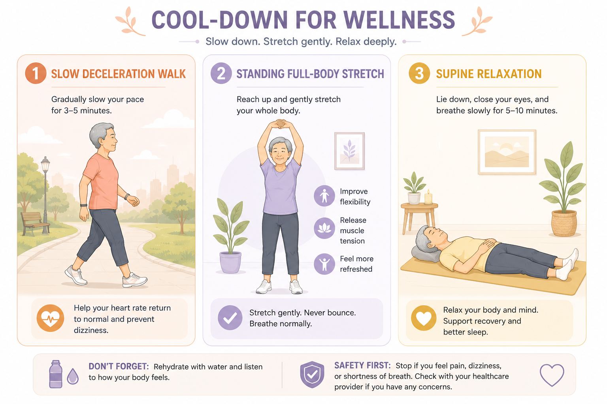
- Reduce walking pace gradually over 3–5 minutes
- Never stop suddenly — keep moving until heart rate and breathing have settled
- End with 2 minutes of very slow strolling
- Sit only after heart rate has returned to near-resting level
- Seated hamstring stretch × 30 sec each leg
- Seated calf stretch × 30 sec each leg
- Chest opener × 30 sec × 2
- Neck side tilts × 20 sec each side
- Deep breathing × 5 cycles while stretching
- Lie flat on back with pillow if needed
- Arms relaxed at sides, eyes closed
- Breathe in through nose for 4 counts
- Breathe out through mouth for 6 counts
- Continue for 3–5 minutes — let your body sink heavy into the floor
Exercise Calculator — Target Heart Rate Zones & Energy Expenditure
Calculate your safe target heart rate training zones for CKD using the Karvonen formula, and estimate calorie burn for common activities by MET value. These zones are adjusted for CKD — most patients should train in the light-to-moderate zone (RPE 11–14 on the Borg scale).

⚕ Karvonen formula: Target HR = ((Max HR − Resting HR) × intensity%) + Resting HR. Max HR estimated as 220 − age (Tanaka formula gives 208 − 0.7×age; both are estimates). HRR = heart rate reserve. MET estimates per ACSM guidelines. For HD patients: exercise on non-dialysis days or during the first 2 hours of the dialysis session. Stop exercise if: chest pain, severe shortness of breath, dizziness, muscle cramps, HR exceeds hard zone. Get physician clearance before starting any exercise program in CKD Stage 4–5 or dialysis.
Weekly Exercise Schedule — Progressive by CKD Stage
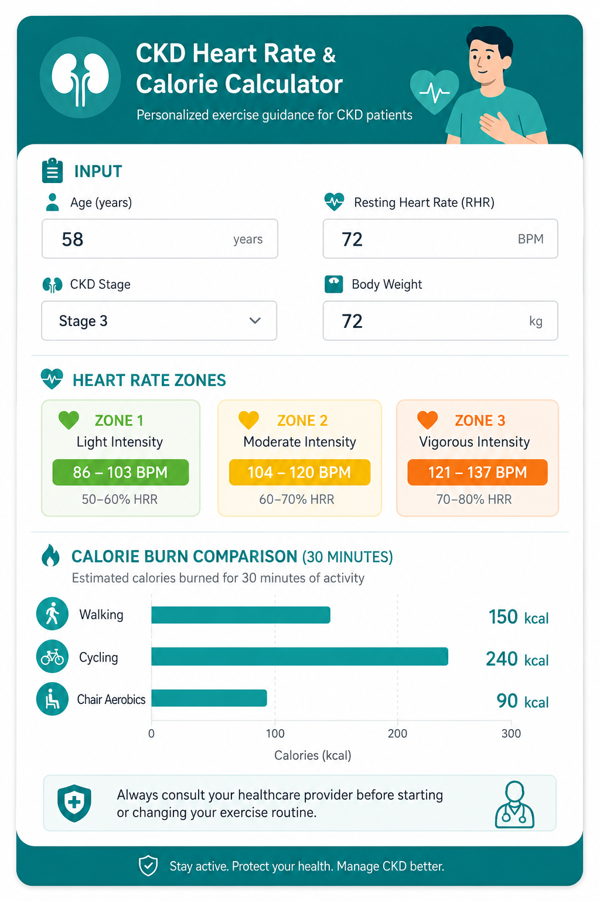
| Day | Activity | Duration | Notes |
|---|---|---|---|
| Monday | Warm-up + Breathing + Stretching + Strength | 35–45 min | Focus on lower body strength |
| Tuesday | Warm-up + Walking / Stationary Cycling | 25–35 min | Moderate steady-state cardio |
| Wednesday | Rest or gentle stretching only | 10–15 min | Recovery day — essential for adaptation |
| Thursday | Warm-up + Breathing + Balance + Strength | 35–45 min | Focus on upper body and balance |
| Friday | Warm-up + Interval Walking + Cool-down | 25–35 min | Interval cardio for fitness progression |
| Saturday | Light activity — leisure walk, gentle stretching | 20–30 min | Active recovery; family involvement encouraged |
| Sunday | Complete rest | — | Full recovery; prepare for next week |
Progressive Build — Month by Month
| Phase | Duration per session | Intensity | Focus |
|---|---|---|---|
| Month 1 Foundation | 15–20 min total | RPE 2–3 (very light) | Warm-up, breathing, seated exercises only. Build habit and confidence. |
| Month 2 Building | 25–30 min total | RPE 3–4 (light–moderate) | Add standing exercises, balance work, 10–15 min walking. |
| Month 3 Progressing | 35–40 min total | RPE 4–5 (moderate) | Add resistance bands, interval walking, full balance circuit. |
| Month 4+ Maintaining | 45–60 min total | RPE 4–5 (moderate) | Full program. Reassess with nephrologist quarterly. Consider supervised exercise class. |
Signs you are exercising at the right level
- You finish the session feeling tired but not exhausted
- You feel better (less fatigue, better mood) within 30 minutes of finishing
- Muscle soreness the next day is mild and resolves within 24 hours
- Your blood pressure 30 minutes after exercise is at or below your pre-exercise reading
- You could carry on a short conversation throughout the session
- Sleep quality and appetite are gradually improving over weeks
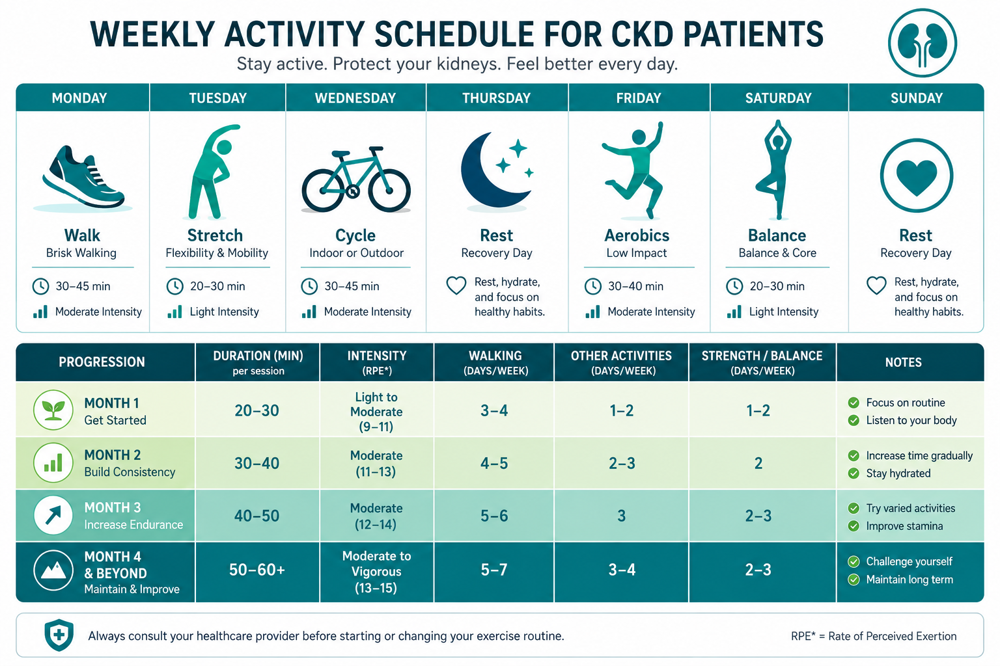
Clinical Frailty & Fitness CalculatorsMga Kalkulador ng Frailty at FitnessMga Kalkulador sa Frailty ug FitnessDeng Kalkulador ning Frailty at Fitness
Use these validated tools to assess your physical function and exercise capacity. Results help guide appropriate exercise intensity and identify when extra support is needed.Gamitin ang mga tool na ito upang masuri ang iyong pisikal na kakayahan at kapasidad sa ehersisyo.Gamiton kining mga himan aron masusi ang imong pisikal nga kahimtang ug kapasidad sa ehersisyo.Gamitin dening mga kasangkapan para sukat ing inyung pisikal a kakayahan ampong kapasidad king ehersisyo.
Select the level that best describes your overall fitness and ability to manage daily activities.Piliin ang antas na pinakamalapit sa inyong kalusugan at kakayahang gawin ang pang-araw-araw na gawain.Pilia ang lebel nga labing hapit sa imong kinatibuk-ang kahimtang ug kakayahan sa adlaw-adlaw nga buluhaton.Pili ing antas a labing tutu king inyung kalusugan ampong kakayahan a gawan ing pang-aldaw-aldaw a gawa.
⚕ CFS: Rockwood et al. (2005), validated for CKD/dialysis populations. DASI: Hlatky et al. (1989), validated for cardiac and renal populations. These tools are educational aids only and do not replace individualized physician assessment. Exercise recommendations should be reviewed by your nephrologist.⚕ Mga kagamitang pang-edukasyon lamang; hindi pumapalit sa pagtatasa ng doktor.⚕ Mga himan sa edukasyon lamang; dili makapuli sa pagtimbang sa doktor.⚕ Deng kasangkapang pang-edukasyon lamang; e kalagan ing pagsusuri ning doktor.